Project 2: Fun with Filters and Frequencies!
Albert Wang
In this project, we play around with 2D convolutions and filtering, using different image manipulation techniques to blur/sharpen images, generate hybrid images, and blend images together.
Part 1: Fun with Filters
Part 1.1: Finite Difference Operator
Here, we use finite difference operators Dx and Dy to look for horizontal and vertical edges. Next, we calculate the gradient magnitude by doing sqrt(dx2 + dy2) and binarize the image to show the edge image. I used a threshold of 0.1.
Original Image:

After Processing:
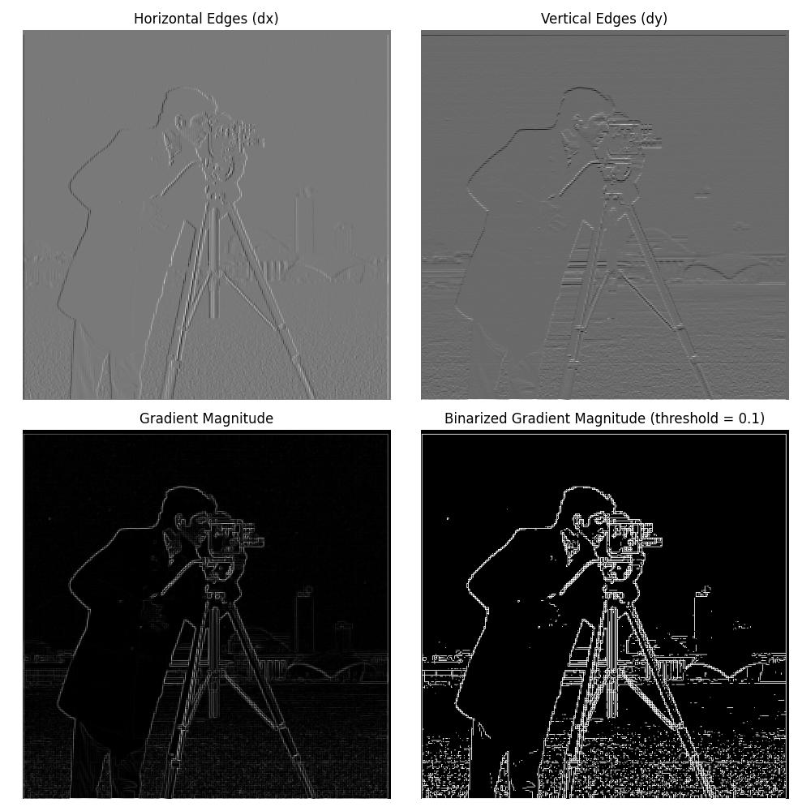Part 1.2: Applying Gaussian Filter
To make this image less rough, we can use a Gaussian filter. Now we blur the image before applying the finite difference operators. We can see this generates smoother images. This requires two convolutions: convolving the image with the Gaussian filter to blur it, and then convolving the blurred image with the finite difference operator. We can see that in the result, the edges are a lot smoother and there is less noise.
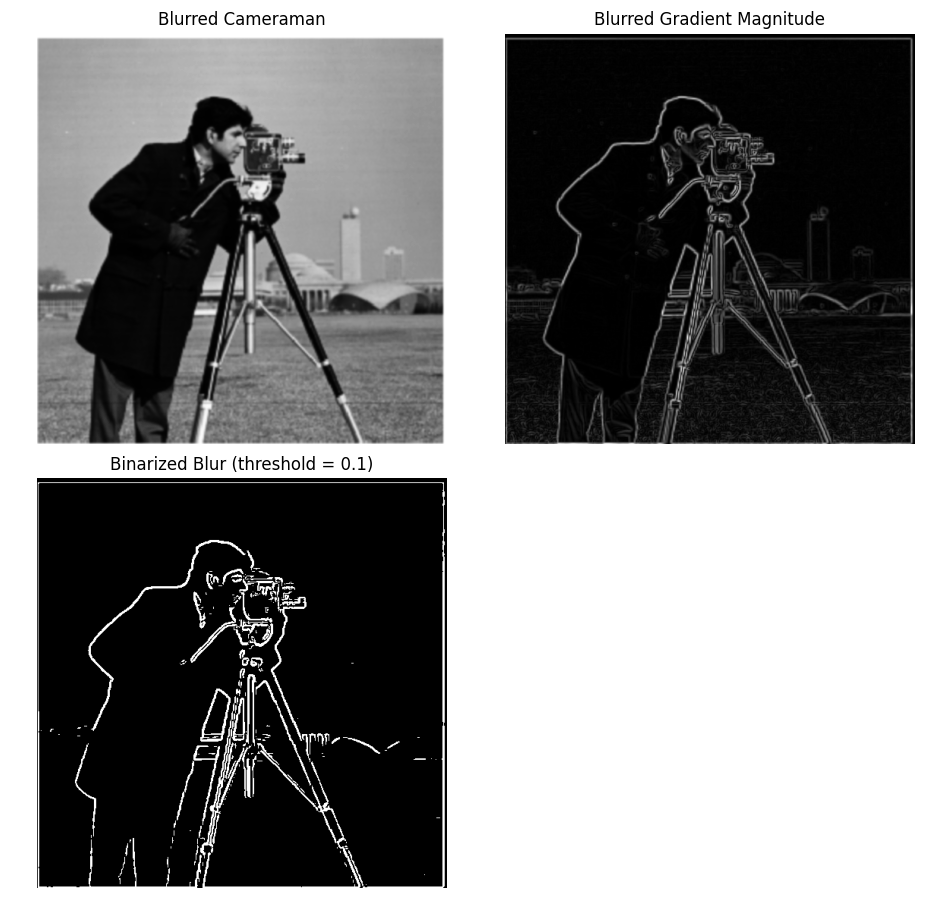Alternatively, we can first convolve the Gaussian filter with each of the finite difference operators, then convolve each of those with the original image. This is known as the DoG (Derivative of Gaussian) approach. We can see that using the DoG approach gives us the same result.
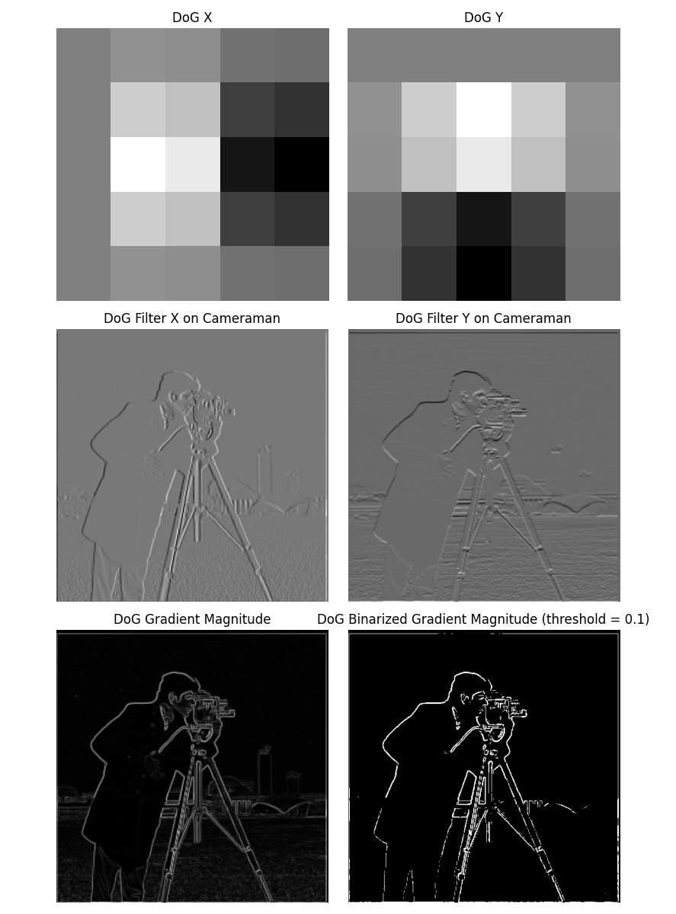Part 2: Fun with Frequencies
Part 2.1: Image "Sharpening"
Next, we will "sharpen" images by using an unsharp mask filter. This involves the following steps:
- Blur the image (convolve it with a Gaussian filter). The Gaussian is a low-pass filter that will isolate the low frequencies of the image.
- Subtract the blurred image from the original image to get the high frequencies.
- Add (alpha * high frequencies) back to the original image, emphasizing high frequencies and thus "sharpening" the image.
Here's the result on the Taj Mahal:
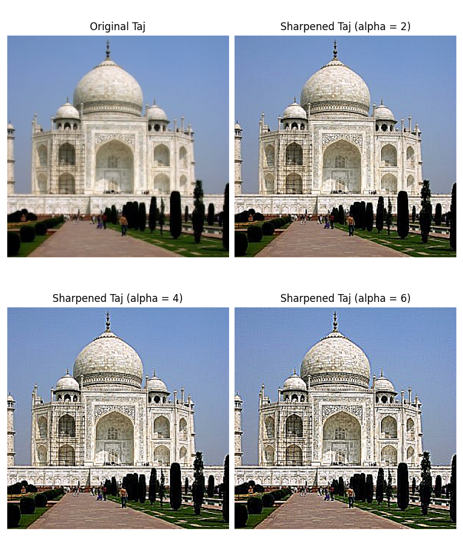Here's the result on my go-to low-res Slack photo:
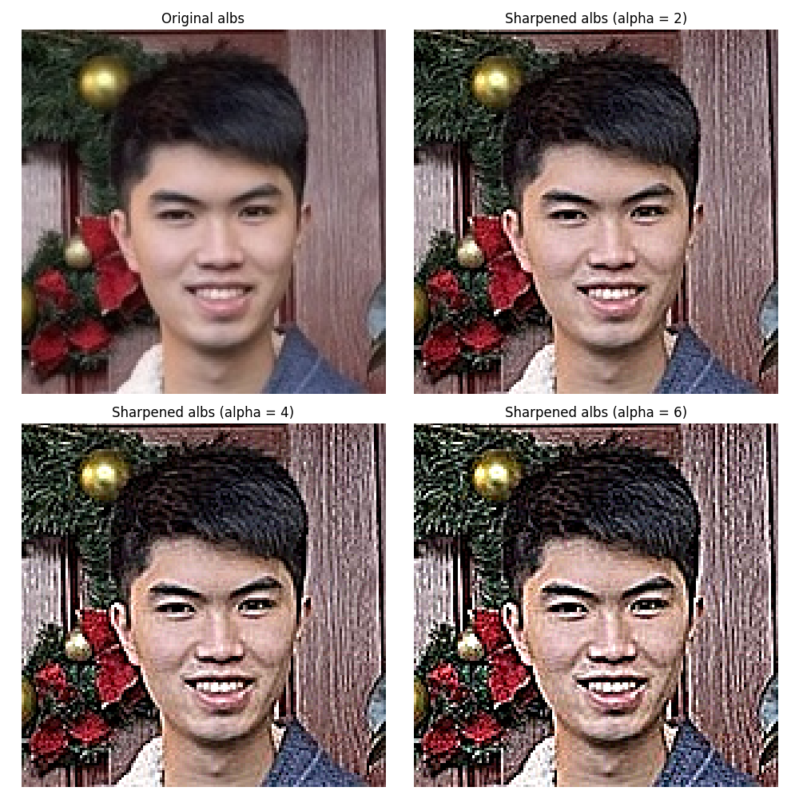However, this method of sharpening isn't always able to magically reproduce details. To demonstrate this, I'll start with a high-res photo of Ray Chen, blur it, and then resharpen it using this method.
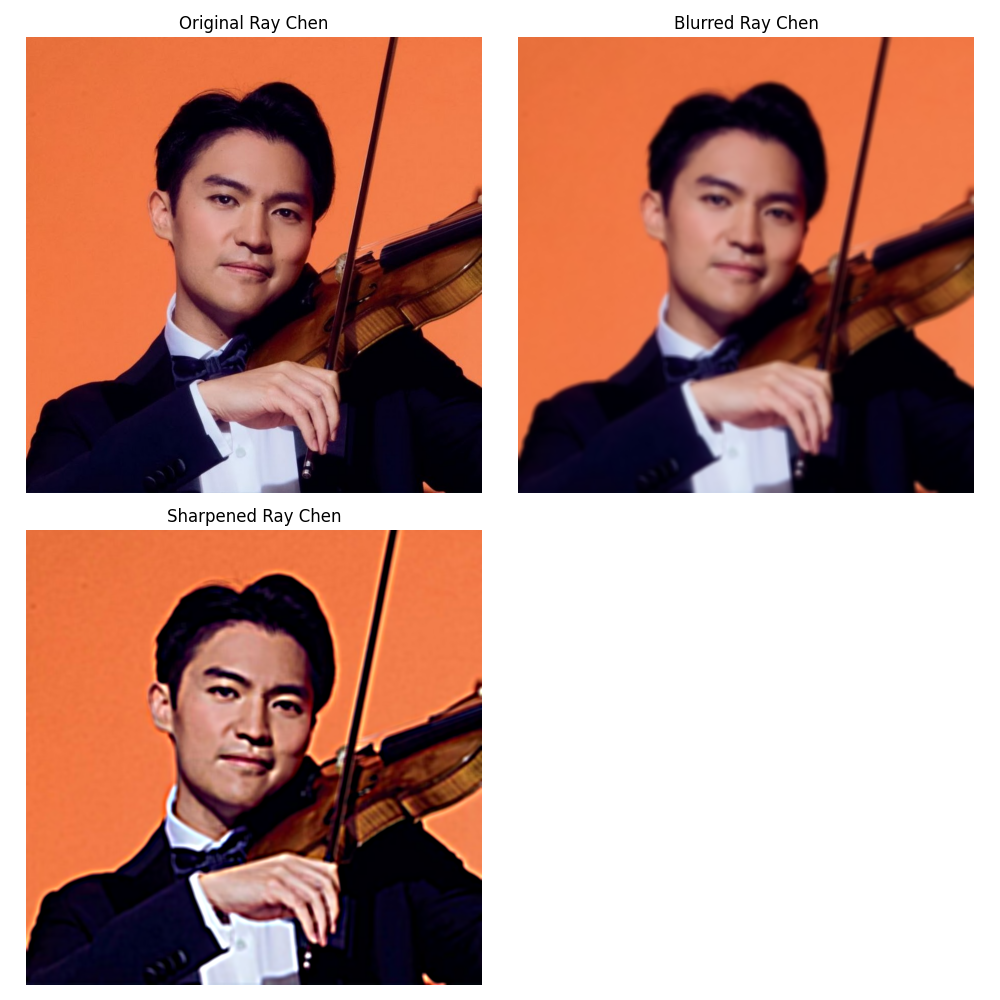You can see that although it's clearer than the blurred image, the resharpened version loses many of the details of the original. There is more visual noise, and the image just generally looks grainier.
Part 2.2: Hybrid Images
Next, we will create hybrid images. To do this, we will mix high frequencies from one image with low frequencies from another image. From afar, low frequencies will be more visible, but from up close, higher frequencies will dominate. We will use the Gaussian filter to extract low/high frequencies as mentioned in Part 2.1. This effect works best when the images are of similar shape and are aligned correctly.
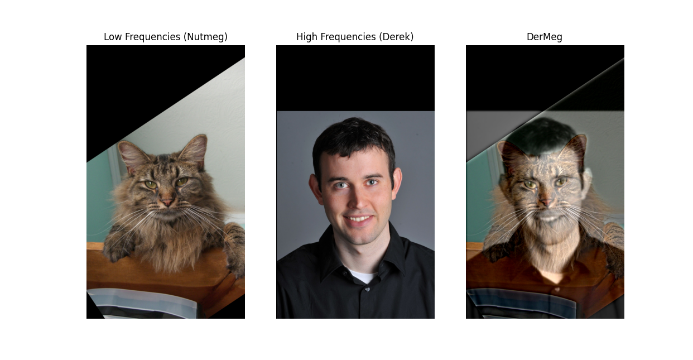Here is my favorite result, combining a pickleball with a sleeping cat. It works well because of the similarity of the shapes.
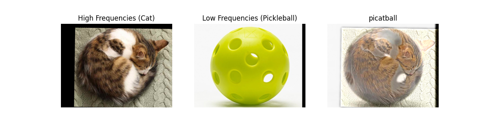This is the log magnitude of the Fourier transform used:
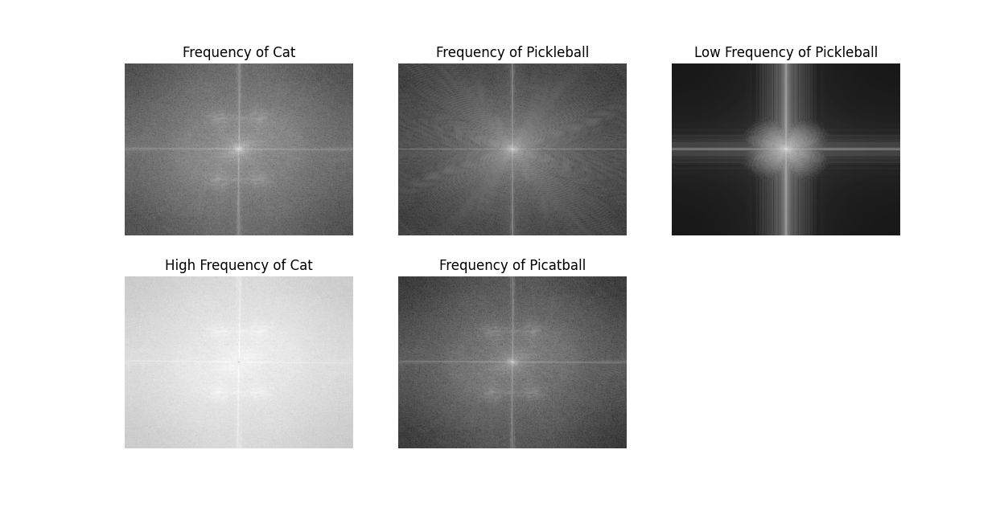This method didn't work so well when I tried to merge Kirby and Meta Knight. This is likely because although they are similar characters (at least I thought so), their shapes in these images are too different and don't align well. These pictures both also have dark lines that are visible from both up close and afar.
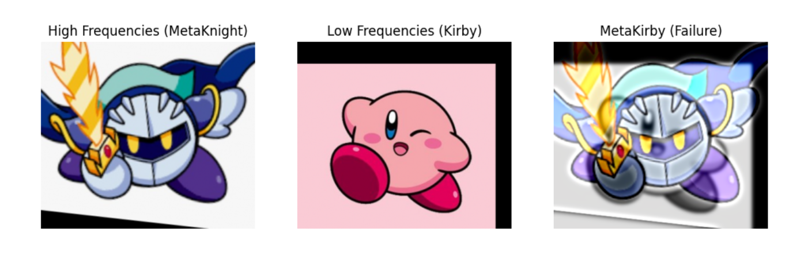Part 2.3/2.4: Gaussian and Laplacian Stacks and Multiresolution Blending
In this part, I implemented a Gaussian and Laplacian Stack. The Gaussian Stack is created by repeatedly blurring an image with the Gaussian filter. The Laplacian is generated by taking the difference between successive layers in the Gaussian Stack and encodes the frequencies between two corresponding images in the Gaussian Stack. This process is done on each color channel (R, G, B) and then combined back together.
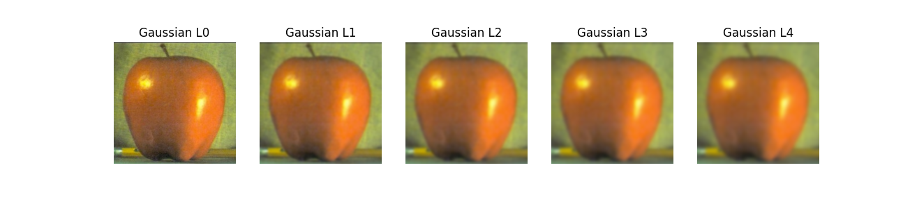 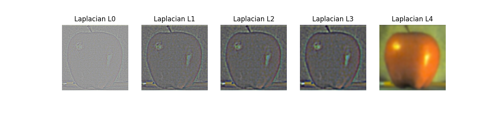We can use these Gaussian/Laplacian Stacks to help blend images. To do this, we create a mask which tells us which pixels from each image we want to use. We generate a Gaussian for the mask and also the Laplacian for the images that we are merging. Then, we combine them together using L1 * M + L2 * (1 - M) to generate our blended image.
Here, we will do it on an apple and orange:
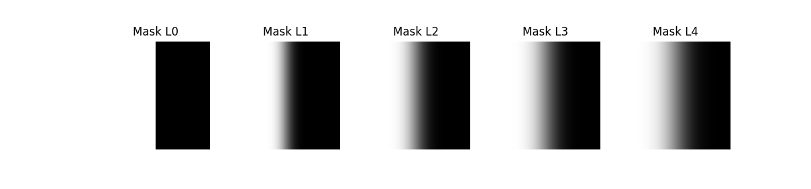 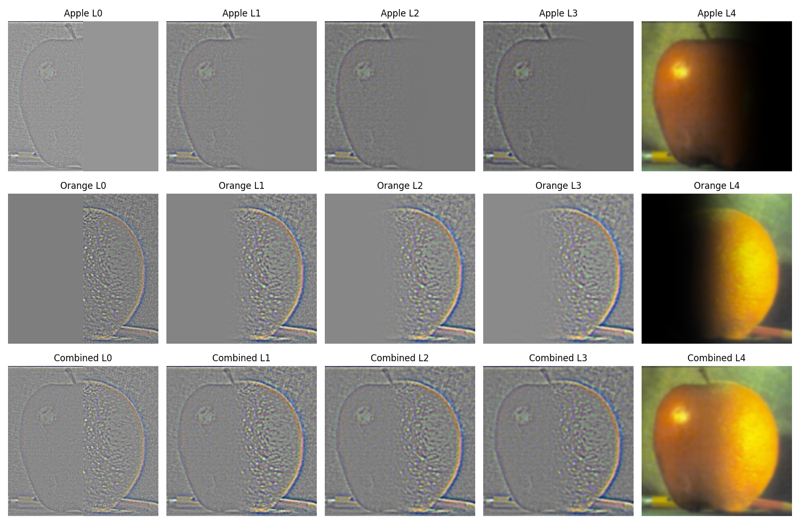 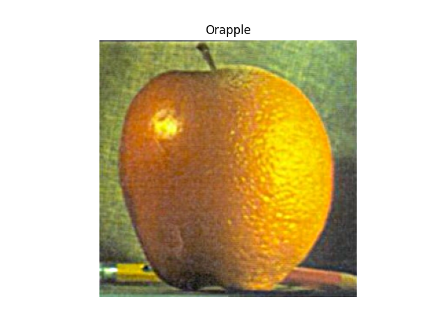Here, I apply the same multiresolution blending on two K/DA All OUT Ahri chromas (where is my Riot Games offer?):
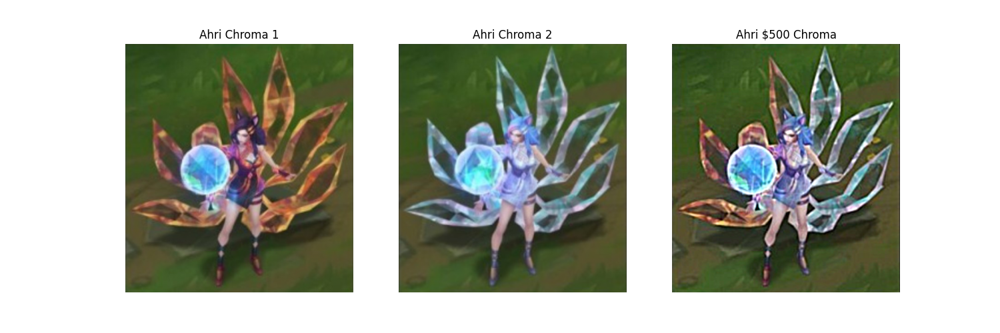Here's an example with a custom mask instead of just using a vertical seam to give Pikachu a pickleball head:
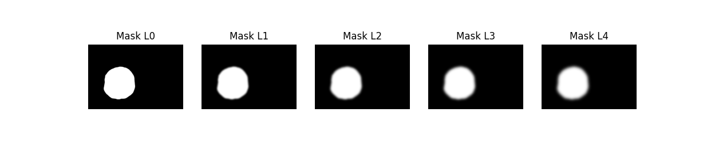 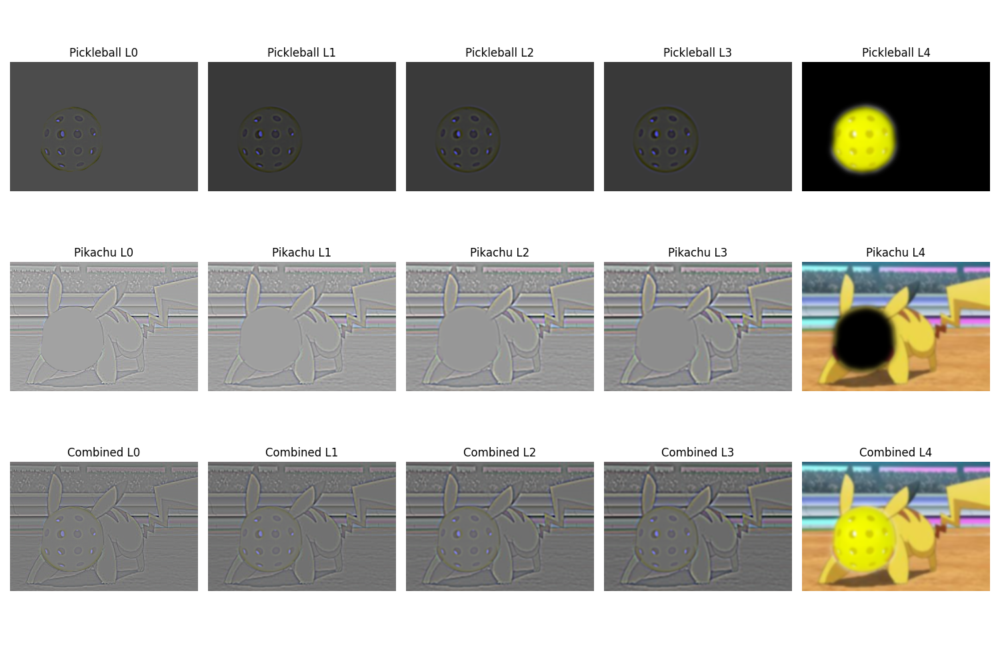 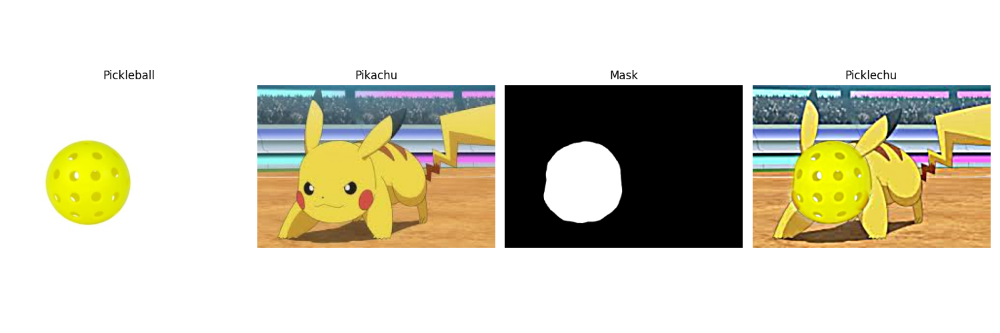Conclusion
In this project, I learned about how we can use convolution and the Gaussian to achieve such a wide variety of image manipulation effects. It was fun to see what worked and what didn't. Trying out different values for different parameters in each of the functions yielded varying results, and it was cool to tweak the parameters to generate the best images.